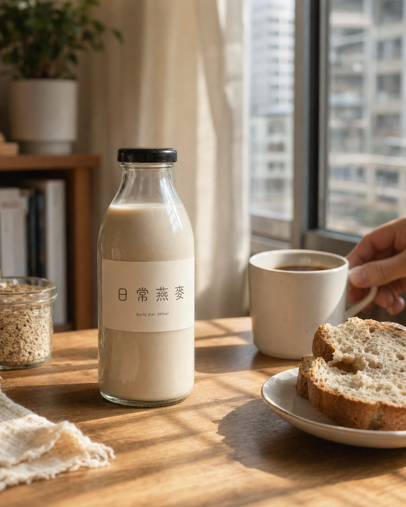

返回課程首頁
(B2)
生活方式情境圖
商品出現在真實生活場景中、給人「有人在用」的故事感。比白底電商圖更有溫度，比影棚廣告硬照更自然，是 IG／Threads／品牌官網 hero 與雜誌風 EDM 封面最常用的視覺語彙。
這張卡片你會學到
能判斷何時用生活方式情境圖（與 B1 白底電商圖、B3 影棚產品圖的差異）
能拆解模板的 6 段 prompt 結構並改寫成自己的商品場景
能識別 3 種常見踩雷（道具過多／光線矛盾／人物正臉）並修正
(01)
適用場景
這個模板用在哪
商品擺在真實生活場景中，被「使用中／準備使用／剛使用過」。自然光主導，可有人物局部（手、背影），少量道具增加生活氣息。目的是讓觀者產生「我也想這樣用看看」的代入感。
三個典型用途：
- IG／Threads／Facebook 品牌貼文封面（最高頻：90% 以上社群素材都走這個語彙）
- 品牌官網 hero（首屏不放純產品、要傳達「有溫度」時用這個）
- 雜誌風 EDM／電子報封面（節慶／季節主題、給訂閱戶的視覺）
| 對比項 | 本卡片 · B2 生活方式情境圖 | 近似模板 |
|---|---|---|
| 場景 | 真實生活場景（早餐桌、咖啡桌、戶外） | B3 影棚：純氛圍、無場景 |
| 光線 | 自然光主導，柔和、略偏暖 | B3 影棚：戲劇光、可極度藝術化 |
| 人物 | 可有局部（手、背影） | B1 白底：禁人物，B3 影棚：通常無人物 |
| UI／文案疊加 | 不疊（純攝影感） | B5 product-card-overlay：必須疊 UI 卡 + 文案 |
| 觀者代入感 | 高（讓人想用看看） | B1 白底：低（看清楚規格用），B3 影棚：中（嚮往感） |
一句話判斷：客戶要的是「規格清楚」走 B1；要的是「廣告級嚮往感」走 B3；要的是「真人真用、有故事」走本卡片 B2。三選一不要混。
(02)
模板拆解｜6 段 prompt 結構
原模板把一張生活方式圖拆成 6 段，每段都有可調參數。先記這個結構，下次寫 prompt 不必從零開始：
| 段 | 段落 | 必問還是可預設 | 填什麼 |
|---|---|---|---|
| 1 | subject 商品 | 必問 | 商品名 + 視覺特徵（瓶身／包裝／顏色）+ 畫面位置（中心／右下／桌上一角） |
| 2 | scene 場景 | 必問 | 地點 + 時段（辦公桌／咖啡館／早晨梳妝台／海邊木桌／戶外露營） |
| 3 | lighting 光線 | 可預設 | 自然光／暖光／陰天柔光（建議跟商品調性一致：保健配清晨；飲料配午後；數碼配上午） |
| 4 | human_presence 人物 | 必問（要不要） | 局部（手指、背影）；不要正臉（會搶戲） |
| 5 | extra_props 道具 | 可預設 | 3-5 個、跟商品同色系；不超過 5 個（不然會喧賓奪主） |
| 6 | 限制約束 | 固定寫死 | 禁忌：3D 渲染感、人物正臉、道具搶戲、電商廣告卡片 |
記憶口訣：商品 → 場景 → 光線 → 人物 → 道具 → 禁忌。前 4 段是必問，後 2 段是品質控制。新手卡關 90% 是漏了「人物要不要」這一段，AI 會自己腦補一張正臉進來把商品吃掉。
(03)
台灣化範例 ①｜小工作室視角
小工作室 · 接客戶案
幫本地燕麥奶品牌做「週末早餐桌」素材組（給客戶 IG 用）
- 1 商品｜300ml 玻璃瓶燕麥奶、瓶身印「日常燕麥」字樣、位置略偏左中
- 2 場景｜木質早餐桌、週末上午 9 點、台北小公寓窗邊
- 3 光線｜自然側光（從右側窗戶灑入）、柔和、略偏暖
- 4 人物｜局部：一隻手剛把馬克杯放下（不見全身、不見臉）
- 5 道具｜剝開的全麥麵包、半切的香蕉、白瓷杯裝著黑咖啡
- 6 禁忌｜別讓人物正臉出現、別放外送平台貼紙、別讓燕麥奶包裝跟麵包搶焦點
為什麼這個情境成立：燕麥奶 + 週末 + 早餐 = 目標客群（注重生活品質的雙北上班族）的真實生活想像，比放純產品圖更能引發共鳴。同 brief 改 8 個不同時段／角度，整組 IG 貼文就有了，工作室一個下午搞定。
(04)
台灣化範例 ②｜個人接案視角
個人接案 · SOHO 攝影師
手沖咖啡個人品牌「咖啡桌一角」素材給 Threads 用
- 1 商品｜黑色不鏽鋼手沖壺 + 自家烘焙咖啡豆袋（200g）、位置：壺左、豆右
- 2 場景｜木紋咖啡桌、午後 2-3 點、暖陽斜照
- 3 光線｜自然頂光偏右、暖色溫、帶輕微陰影（製造「下午茶感」）
- 4 人物｜手指輕觸豆袋、不見手背紋路（避免年齡識別）
- 5 道具｜陶瓷濾杯、空咖啡杯（喝完狀態）、一頁打開的筆記本
- 6 禁忌｜別讓豆袋的英文 logo 跟壺的金屬反光競爭、別放會看出地點的窗外景
接案實務 tip：「喝完狀態」的杯子比「冒煙的滿杯」更有真實感，冒煙容易看起來像合成。客戶一聽就知道你懂；這種小細節讓你的接案報價站得住。
(05)
示範圖｜可複製、可重現
下面這張圖是用範例 ① 的 6 段（燕麥奶 + 週末早餐桌）實際跑出來的成品。下方就是完整的 prompt——點「複製 prompt」、貼到 ChatGPT 或 Gemini 的對話框，就會出一張結構相同的圖：

完整 prompt · 燕麥奶週末早餐桌
請幫我生成一張生活方式情境圖（lifestyle product scene），結構照下面六段： 【商品】一支 300ml 的玻璃瓶燕麥奶，瓶身印著「日常燕麥」字樣，位置在畫面略偏左中。 【場景】木質早餐桌上，週末上午約 9 點，台北小公寓的窗邊。 【光線】自然側光從右側窗戶灑入，柔和、色溫略偏暖，有輕微的窗框陰影感。 【人物】畫面只露出局部——一隻手剛把白瓷馬克杯放下，看不見全身、也看不到臉。 【道具】桌上有剝開的全麥麵包、半切的香蕉、一只白瓷馬克杯裝著黑咖啡。所有道具與燕麥奶同色系（米白、淺棕）。 【風格與限制】真實攝影感、低飽和度、淺景深，商品為視覺焦點，色調統一。不要 3D 渲染感、不要人物正臉、不要任何外送平台貼紙或多餘 logo、不要讓食物搶過燕麥奶的焦點。輸出比例 4:5（適合 Instagram 貼文）。
三個替換重點（同一份 prompt 改三處就變你的場景）：
- 把【商品】整段換成你的商品（名稱、容量、瓶身字樣、畫面位置）
- 把【場景】換成你的時段／地點（早晨梳妝台、午後咖啡桌、傍晚陽台⋯⋯）
- 把【道具】整段換成跟你商品搭調的 3-5 個物件（記得同色系）
進階：給 GPT-image-2 / API 用的 JSON 結構版（直接傳給 OpenAI /images/generations）
{
"type": "生活方式情境圖",
"goal": "生成一張商品出現在真實生活場景中的視覺，氛圍真實克制、可作為品牌主視覺或社媒封面",
"subject": {
"product_name": "300ml 玻璃瓶燕麥奶",
"visual_description": "瓶身印「日常燕麥」字樣，圓肩玻璃瓶，米白底淺棕字",
"position": "畫面略偏左中"
},
"scene": {
"location": "台北小公寓窗邊的木質早餐桌",
"time_of_day": "週末上午 9 點",
"weather_or_mood": "週末早晨、悠閒、微涼",
"extra_props": ["剝開的全麥麵包", "半切的香蕉", "白瓷馬克杯裝著黑咖啡"]
},
"lighting": {
"type": "自然光",
"direction": "側光，從右側窗戶灑入",
"intensity": "柔和",
"color_temp": "略偏暖"
},
"human_presence": {
"enabled": true,
"form": "局部，一隻手剛把白瓷馬克杯放下",
"rule": "不見全身與臉部"
},
"text_overlay": {"enabled": false},
"style": {
"rendering": "真實攝影感 + 低飽和度，不像廣告硬照",
"depth": "淺景深，商品清晰",
"consistency": "色調統一、米白與淺棕同色系"
},
"constraints": {
"must_keep": ["商品為視覺焦點", "場景真實可信", "光線方向統一", "道具與商品同色系"],
"avoid": ["3D 渲染感", "人物正臉", "外送平台貼紙或 logo", "食物搶焦點"]
},
"output": {"aspect_ratio": "4:5"}
}
讀圖時看這 4 個點：(1) 商品是不是視覺焦點？(2) 光線方向有沒有混亂？(3) 道具有沒有搶戲？(4) 整體飽和度有沒有「廣告硬照感」？這 4 個點過了，這張就是合格的生活方式情境圖。
(06)
改成你的場景
把上面 6 段拿來，只動 3 個替換槽，就變成你自己的 prompt：
| 替換槽 | 你的版本 |
|---|---|
| ⓐ 商品＝？（具體名稱 + 視覺特徵） | 例：你客戶的精油皂、200g、淺黃色包裝 |
| ⓑ 場景＝？（時段 + 地點 + 季節） | 例：浴室梳妆台、清晨、春天微涼 |
| ⓒ 人物＝有 or 無？（有的話：哪個部位） | 例：有 · 一隻手剛擠出泡沫 |
最常見的 4 種踩雷：
- 道具塞太多 5 個是上限，第 6 個會搶焦點。如果你想呈現「豐盛感」，改用「層次堆疊」（前景 1 個近、中景 2 個中、後景 1 個虛化）而不是「並列 7 個」。
- 光線方向矛盾 寫了「自然側光從左」但又寫「頂光柔和」，AI 會無所適從、出來的圖會有 2 道不同方向的光源。一張圖只寫一個主光源方向，補光寫「柔和反射」就好。
- 人物正臉 即使你只想要「友善的微笑」，AI 給你的人物 80% 會搶過商品的視覺重量。改用「手指／背影／局部」最保險；真要有臉，限定「側臉、模糊、佔畫面 <15%」。
- 中文 logo 字體別指望 prompt 解決 這個是 AI 生圖工具的固有限制，不是 prompt 寫得不夠。模型對中文字體的選擇幾乎只會給「系統預設襯線體」（接近新細明體）——不管你寫「金萱體」「圓體明朝」「Maru Mincho」「Noto Serif TC」「禁用思源宋體」，回來的字體都長得差不多。本卡片示範圖跑了 3 次都驗證了這個限制。
實務分工：構圖／光線／道具／人物用 prompt 解決；中文 logo 字體在 Figma／Canva 後製疊上（→ 看 後製字體疊圖工作流附錄，提供 Canva／Figma／Photoshop 三條 6 步驟工作流 + 台灣常用字體取得管道）。英文 logo 比較有機會但仍可能拼錯（本卡片示範圖的小英文 sub-label 就拼錯成 "Daily Yoy"）——客戶交付的標籤字一律後製、不要直接交付 AI 生圖 出來的字。
失敗案例｜prompt 動了哪一處會壞掉：
- 把 lighting.type 從「自然光」改成「室內暖光」+ 場景仍寫「窗邊」 → 違和（窗邊本來就是自然光主導，AI 會二選一、結果會瞎猜）
- 把 extra_props 從 4 個加到 7 個 → 變成「擺拍展示」而不是「生活情境」
- 把 human_presence.form 從「局部手指」改成「正面微笑」 → 商品被人物吃掉，變成人物照不是商品照
- 把 style.depth 從「淺景深」改成「全景深」 → 失去「商品是焦點」的感覺，變成圖庫照
交付提醒 本卡片的 AI 生成的示範圖不是可直接給客戶的最終交付品。中文商業案一律先用 AI 生出構圖（含英文佔位文字）、再走 後製字體疊圖工作流 在 Figma／Canva 疊上中文、最後校稿確認才交付給客戶。
本卡片改寫自 ConardLi／garden-skills 之
lifestyle-product-scene.md 模板（MIT License、2026），已對中文進行台灣用語在地化、加入兩個本地接案情境與失敗案例，原始 JSON prompt 結構保留為教學參考。